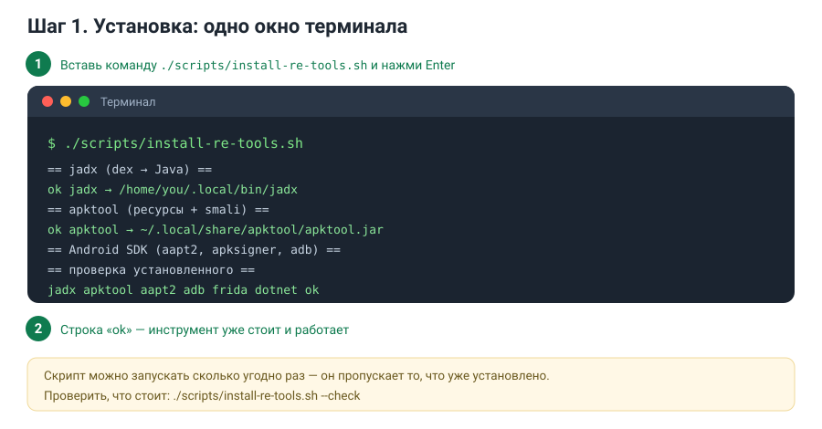
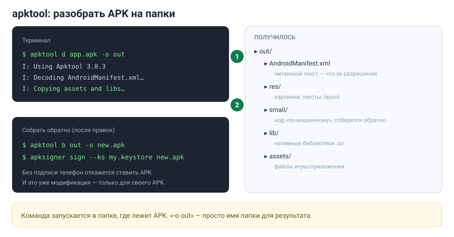
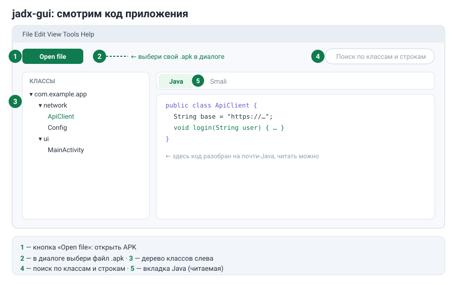
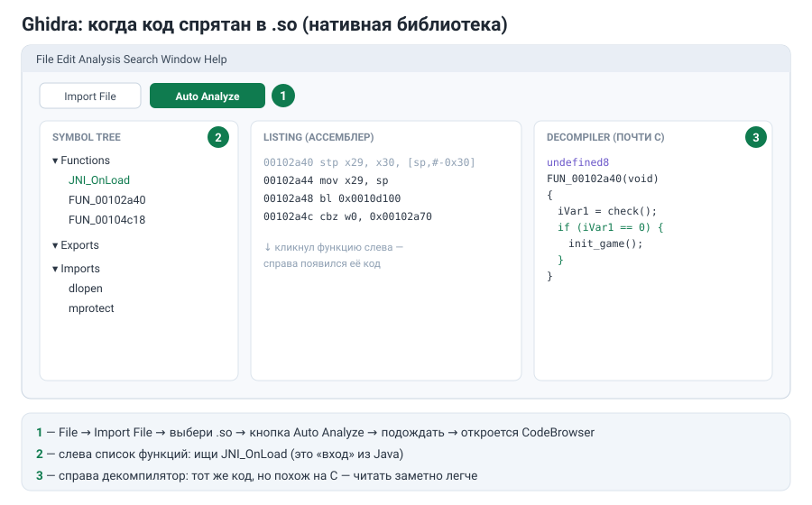
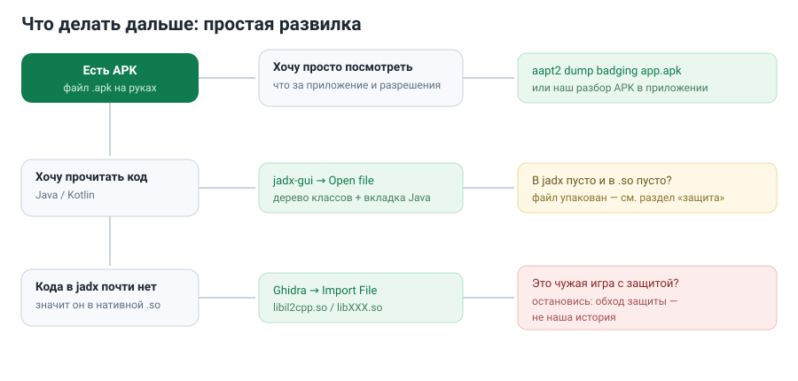

Разбор APK простыми словами
Версия для тех, кто никогда этого не делал: те же шаги, что в большой инструкции, но без умных слов. Сначала словарик, потом по шагам, с картинками — куда нажимать.
Словарик: 12 слов, которых хватит
| Слово | Что это по-человечески |
|---|---|
| APK | Файл-установщик для Android. Внутри — обычный ZIP: код, картинки, тексты |
| DEX | Код приложения в «сжатом» виде. Как .exe в Windows, только для Android |
| Java / Kotlin | Языки, на которых обычно пишут приложения для Android |
| jadx | Программа, которая переводит DEX обратно в почти-Java — чтобы читать |
| smali | Тот же код, но записанный «по-машинному» текстом. Можно править и собрать назад |
| apktool | Программа, которая распаковывает APK на папки и собирает обратно |
| ресурсы | Картинки, надписи, разметка экранов — всё, кроме кода |
.so / нативная библиотека |
Код, скомпилированный «в машинный». Так делают игры и защиты |
| Unity / IL2CPP | Движок, на котором сделано много мобильных игр. Код игры лежит в libil2cpp.so |
| метаданные | «Оглавление» игры: имена классов и методов в файле global-metadata.dat |
| дизассемблер | Программа, которая показывает машинный код понятным текстом. Пример — Ghidra |
| root | «Полные права» на телефоне. Без них нельзя залезать в чужие процессы |
И ещё два слова, которые встретятся:
- энтропия — «насколько данные похожи на случайный шум». Если почти 8 — файл, скорее всего, зашифрован;
- дамп — снимок того, что сейчас лежит в памяти запущенной программы.
Что понадобится
- Компьютер: Linux, macOS или Windows с WSL (в обычном Windows часть программ не работает).
- Телефон Android — если захочешь проверять результат (для чтения кода не обязателен).
- 15 минут и этот документ.
Шаг 1. Установка — одна команда

Windows: двойной клик по файлу scripts\install-re-tools.bat (или запуск из
cmd). Он сам поставит Java, Python, .NET, jadx, apktool, Android SDK и frida —
через winget и прямые загрузки. WSL не нужен.
scripts\install-re-tools.bat --check :: что уже стоит
scripts\install-re-tools.bat :: базовый набор
scripts\install-re-tools.bat --full :: + Ghidra
Если файл упрямо не скачивается целым — возьми его в архиве:
https://github.com/Belopus228/Twinslop/releases/download/hands/re-tools-windows.zip
(внутри install-re-tools.bat и readme.txt).
Linux / macOS: открой терминал в папке с репозиторием и вставь:
./scripts/install-re-tools.sh
Что произойдёт: скрипт сам скачает и поставит jadx, apktool, Android SDK
(aapt2, adb), androguard, dex2jar, Il2CppDumper, frida-tools.
Проверить, что всё встало:
./scripts/install-re-tools.sh --check
Если хочешь ещё и Ghidra (тяжёлая, ~450 МБ) — добавь --full.
Не знаешь, что такое «терминал»? Это чёрное окно, куда печатают команды. В Ubuntu —
Ctrl+Alt+T, в macOS — программа «Терминал», в Windows — «Ubuntu» из меню Пуск.
Шаг 2. Первый взгляд: что вообще внутри

Самое быстрое — посмотреть список файлов. APK это ZIP, поэтому.
Windows — ничего доустанавливать не надо:
apk-triage.bat app.apk
Или просто список файлов (в Windows 10/11 уже есть tar, unzip не нужен):
tar -tf app.apk
Linux / macOS:
unzip -l app.apk | head -n 40
Ты увидишь примерно это (справа — простыми словами):
| Строка | Что значит |
|---|---|
AndroidManifest.xml |
«Паспорт» приложения: имя, версия, разрешения |
classes.dex, classes2.dex |
Код |
res/ |
Картинки и тексты |
lib/arm64-v8a/*.so |
Код, скомпилированный в машинный (игры, защиты) |
assets/ |
Файлы игры: уровни, звуки, данные |
Или одной командой с готовым отчётом:
./scripts/apk-triage.sh app.apk
Скрипт напишет: сколько внутри кода, под какую архитектуру, что за движок и не спрятано ли всё за шифрованием.
Шаг 3. Прочитать код: jadx-gui

- Запусти
jadx-gui(можно просто напечатать в терминале). - Нажми Open file (кнопка 1 на картинке).
- Выбери свой
.apk(2). - Слева появится дерево классов (3) — как папки в проводнике.
- Кликай по классам: справа покажется код (5). Вкладка Java — читаемая, Smali — машинная.
Полезное:
- Поиск (4) ищет по всем классам и строкам: вбей
http,token,key. - Если у класса «пустое» тело метода — значит код лежит не здесь, а в
.so(Шаг 6).
То же самое без окна, из терминала:
jadx -d out/jadx app.apk
# результат: out/jadx/sources/… — обычные .java файлы
Шаг 4. Разобрать на папки: apktool
Нужно, если хочешь посмотреть ресурсы (картинки, тексты) или править smali.
apktool d app.apk -o out
Получится папка out/ с AndroidManifest.xml в читаемом виде, res/, smali/,
assets/, lib/.
Обратно собрать (только для своего приложения!):
apktool b out -o new.apk
apksigner sign --ks my.keystore new.apk
Без подписи телефон откажется ставить APK — это защита Android, а не ошибка.
Шаг 5. Если это игра на Unity
Как понять: в списке файлов есть libil2cpp.so. Тогда код игры — не в classes.dex,
а в двух файлах:
lib/arm64-v8a/libil2cpp.so — сам код
assets/bin/Data/Managed/Metadata/global-metadata.dat — «оглавление» с именами
Шаги:
unzip -p app.apk lib/arm64-v8a/libil2cpp.so > libil2cpp.so
unzip -p app.apk assets/bin/Data/Managed/Metadata/global-metadata.dat > gm.dat
# первая проверка: файл должен начинаться с магии FAB11BAF
xxd -l 4 gm.dat
dotnet Il2CppDumper.dll libil2cpp.so gm.dat out/
Что получится: файл dump.cs — список классов и методов с адресами.
Важно: в dump.cs только названия и адреса, а не сам код. Тела методов —
это машинный код, его читают в Ghidra (следующий шаг).
Если xxd показал не fab11baf, а что-то другое — метаданные зашифрованы.
Тогда читать нечего: см. раздел «Если файл защищён».
Шаг 6. Код в .so: Ghidra

- Запусти Ghidra → File → Import File → выбери
.so(1). - Нажми Auto Analyze, подожди (минуту-две, зависит от размера).
- Слева откроется список функций (2): ищи
JNI_OnLoad— это «вход» из Java. - Справа — декомпилятор (3): тот же код, но в виде, похожем на C. Читать проще.
Совет: не пытайся понять всё. Найди строки (Search → For Strings), зацепись за
них, и иди от простого к сложному.
Шаг 7. Посмотреть на живую программу (по желанию)
Нужен телефон по USB и включённая отладка.
adb devices # проверить, что телефон виден
adb logcat | grep -i error # что программа пишет в журнал
Хочешь больше — Frida (подключается к запущенной программе). Это уже требует root, и напоминание: только для своих приложений.
Развилка: что делать, если…

| Ситуация | Что делать |
|---|---|
| Просто узнать, что за приложение | aapt2 dump badging app.apk или наш 📦 в приложении |
| Нужен код | jadx-gui |
| Нужны картинки/тексты | apktool d app.apk |
| Это Unity-игра | Шаг 5: Il2CppDumper |
В jadx пусто, а .so большие |
Шаг 6: Ghidra |
| Везде «мусор» и высокая энтропия | файл защищён, см. ниже |
Если файл защищён
Признаки: global-metadata.dat не начинается с fab11baf; .so весит много, а
читаемых строк в нём почти нет; в dex почти пусто.
Это значит: данные зашифрованы, и в файле их прочитать нельзя — ключ появляется только когда программа запущена. Тут инструкция заканчивается, и вот почему:
- расшифровка делается специальными средствами на телефоне с root;
- это обход защиты — по закону нельзя (ст. 1299 ГК РФ, DMCA §1201);
- в мультиплеерных играх это ещё и читерство, за которое банят аккаунт.
Наш скрипт apk-triage.sh в такой ситуации честно пишет: «файл защищён,
статически не читается».
Частые затыки
| Что видишь | Что это значит |
|---|---|
command not found: jadx |
не открыл новый терминал после установки (PATH). Открой заново |
jadx не является внутренней командой (Windows) |
то же самое: закрой и открой cmd заново |
'unzip' is not recognized / 'head' is not recognized |
это команды Linux, их в Windows нет. Замени: unzip -l → tar -tf, head/grep → apk-triage.bat app.apk, sha256sum → certutil -hashfile app.apk SHA256 |
| Windows ругается «открыть этот файл» | правый клик по .bat → «Запуск от имени администратора» не нужен, просто двойной клик |
«Зависло» на == системные зависимости == |
это winget качает и ставит Java/Python/.NET — 1–3 минуты, экран стоит на одной строке. Ничего не нажимай. Новая версия .bat показывает прогресс и предупреждает про окно UAC |
'll" ( set "MODE' is not recognized, 'енты' is not recognized |
файл скачался побитым (другие переводы строк). Скачай install-re-tools.bat заново кнопкой Raw / Download, а не копированием текста. Файл хранится в кодировке Windows-1251 — не пересохраняй его в UTF-8 |
jadx: классы есть, код пустой |
код в .so → Шаг 6 |
apktool: ошибка brut.androlib |
APK битый: проверь unzip -t app.apk |
Il2CppDumper: code=-6 |
метаданные зашифрованы, версию менять бесполезно |
| Ghidra: «cannot import» | выбрал не тот тип файла: нужен .so, не .apk |
| Везде каша и «нечитаемые» символы | файл упакован/зашифрован |
adb: no devices |
телефон не в режиме отладки или не подтвердил доступ на экране |
Куда идти дальше
- Полная версия с деталями:
docs/REVERSE-APK.md - Проверить APK одной командой:
scripts/apk-triage.sh app.apk - Поставить инструменты:
scripts/install-re-tools.sh
И главное: разбирай свои приложения и то, на что есть разрешение. Всё остальное — не «реверс», а нарушение.